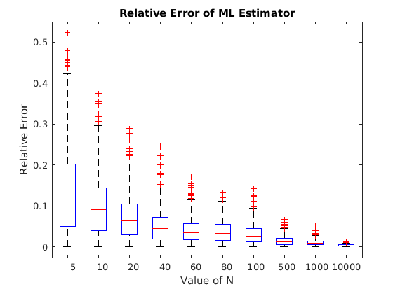
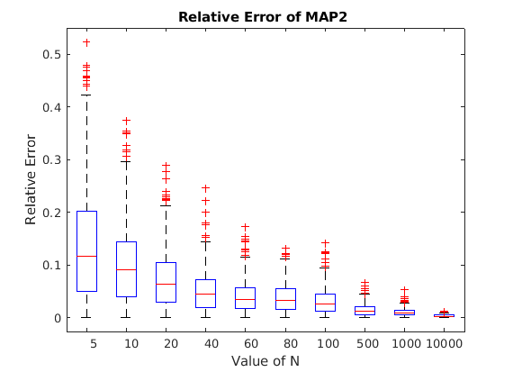

clc;
clear;
rng(101);
truemu=10;
truesigma=4;
muprior=10.5;
sigmaprior=1;
N=[5,10,20,40,60,80,100,500,1000,10000];
mlegraph=zeros(500,10);
mapgraph1=zeros(500,10);
mapgraph2=zeros(500,10);
for i=1:10
n=N(i);
for j=1:500
y=10+4*randn(n,1);
muml=sum(y)/n;
rlerror=abs(muml-truemu)/truemu;
mlegraph(j,i)=rlerror;
xavg=mean(y);
map1=(xavg*sigmaprior^2+muprior*((truesigma^2)/n))/(sigmaprior^2+((truesigma^2)/n));
rlerror=abs(map1-truemu)/truemu;
mapgraph1(j,i)=rlerror;
xavg=mean(y);
rlerror=abs(xavg-truemu)/truemu;
mapgraph2(j,i)=rlerror;
end
end
figure(1)
boxplot(mlegraph, 'Labels',N);
title('Relative Error of ML Estimator');
xlabel('Value of N');
ylabel('Relative Error');
figure(2)
boxplot(mapgraph1, 'Labels',N);
title('Relative Error of MAP1 ');
xlabel('Value of N');
ylabel('Relative Error');
figure(3)
boxplot(mapgraph2, 'Labels',N);
title('Relative Error of MAP2 ');
xlabel('Value of N');
ylabel('Relative Error');


